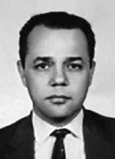

Walter
de Souza
Ribeiro
CIRCUNSTÂNCIAS DA MORTE
Walter foi preso no dia 3 de abril de 1974 por agentes do DOI-CODI de São Paulo. Elencado em documentos de órgãos de segurança como membro efetivo do Comitê Central e do Comitê Estadual de São Paulo do Partido Comunista Brasileiro, Walter foi dado como foragido em relatório do CIE de maio de 1974, que tratou especificamente sobre a estrutura e composição do mesmo. Com informações minuciosas, revelando o monitoramento do partido e de seus membros, o relatório relacionou Walter aos codinomes “Juvenal”, “Beto” e “Jairo” e registrou suas atividades no PCB, dentre elas seu trabalho nas áreas de finanças e militar. As evidências contidas neste documento revelam o caráter político de seu desaparecimento, que integrou os acontecimentos decorrentes da “Operação Radar”, desencadeada pelo DOI do II Exército entre março de 1974 e janeiro de 1976, almejando dizimar a direção do PCB. Segundo informações de pessoas com quem se reuniu na manhã do dia 3, ele saiu na hora do almoço e dizendo que voltaria para o jantar. Porém, não mais apareceu. Com a ausência no decorrer dos dias subsequentes, a família iniciou uma busca incessante por notícias. Walter foi preso na mesma ocorrência em que foram também detidos Luiz Ignácio Maranhão Filho e João Massena Melo, pelo DOI-CODI do II Exército, em São Paulo. A descoberta da prisão foi possível pela insistência dos familiares de Walter que, ao procurarem o deputado federal Fábio Fonseca, conseguiram informações do general Gentil Marcondes Filho, chefe do Estado Maior do II Exército, de que ele estava preso. No final de maio, o irmão de Walter, major Tibúrcio Geraldo Alves Ribeiro, deslocouse para São Paulo para visitá-lo, mas a nova resposta do general Marcondes foi que Walter não estava preso. A família então pediu ajuda ao deputado Freitas Nobre, que foi informado pelo Sindicato dos Jornalistas do Estado de São Paulo de que Walter estivera no DOPS/SP durante o mês de maio. Em comunicado divulgado em fevereiro de 1975, Armando Falcão, então Ministro da Justiça, afirmou que havia um “mandado de prisão expedido pela 2ª Auditoria da 2ª CJM de 1970” e que ele encontrava-se foragido. Em entrevista publicada na revista Veja, de 1992, o ex-Sargento do Exército Marival Dias Chaves declarou que Walter foi conduzido à casa que o Centro de Informações do Exército mantinha em Petrópolis-RJ, onde foi morto. Em depoimentos à Comissão Nacional da Verdade, Marival corrobora esta versão, afirmando que Walter foi preso em São Paulo e enviado para Rio de Janeiro, em 1972, para a “casa da morte”. Segundos suas palavras: “em função, eu imagino, deduzo que o DOI de São Paulo ainda não tinha estrutura”. Na certidão de óbito de Walter a única informação que consta é que ele teria morrido no ano de 1974. Sua família continua à espera de esclarecimentos sobre seu desaparecimento e da entrega de seus restos mortais, para que sejam devidamente sepultados. Até a presente data, Walter de Souza Ribeiro permanece desaparecido.
Walter was arrested on April 3, 1974 by DOI-CODI agents in São Paulo. Listed in documents from security agencies as an effective member of the Central Committee and the State Committee of São Paulo of the Brazilian Communist Party, Walter was considered a fugitive in a CIE report from May 1974, which specifically dealt with its structure and composition. With detailed information, revealing the monitoring of the party and its members, the report linked Walter to the code names “Juvenal”, “Beto” and “Jairo” and recorded his activities in the PCB, including his work in the areas of finance and military. The evidence contained in this document reveals the political nature of his disappearance, which was part of the events resulting from “Operation Radar”, launched by the DOI of the II Army between March 1974 and January 1976, aiming to decimate the leadership of the PCB. According to information from people he met on the morning of the 3rd, he left at lunch time and said he would return for dinner. However, it never appeared again. With his absence over the following days, the family began an incessant search for news. Walter was arrested in the same incident in which Luiz Ignácio Maranhão Filho and João Massena Melo were also detained, by the DOI-CODI of the II Army, in São Paulo. The discovery of the prison was made possible by the insistence of Walter's family who, when looking for federal deputy Fábio Fonseca, obtained information from General Gentil Marcondes Filho, chief of staff of the Second Army, that he was under arrest. At the end of May, Walter's brother, Major Tibúrcio Geraldo Alves Ribeiro, traveled to São Paulo to visit him, but General Marcondes' new response was that Walter was not under arrest. The family then asked deputy Freitas Nobre for help, who was informed by the Journalists Union of the State of São Paulo that Walter had been at DOPS/SP during the month of May. In a statement released in February 1975, Armando Falcão, then Minister of Justice, stated that there was an “arrest warrant issued by the 2nd Audit of the 2nd CJM of 1970” and that he was on the run. In an interview published in Veja magazine in 1992, former Army Sergeant Marival Dias Chaves stated that Walter was taken to the house that the Army Information Center maintained in Petrópolis-RJ, where he was killed. In statements to the National Truth Commission, Marival corroborates this version, stating that Walter was arrested in São Paulo and sent to Rio de Janeiro, in 1972, to the “house of death”. According to his words: “as a result, I imagine, I deduce that the São Paulo DOI did not yet have a structure”. The only information on Walter's death certificate is that he died in 1974. His family continues to wait for clarification about his disappearance and the delivery of his remains, so that they can be properly buried. To date, Walter de Souza Ribeiro remains missing.
Walter fue detenido el 3 de abril de 1974 por agentes del DOI-CODI en São Paulo. Walter, catalogado en documentos de los organismos de seguridad como miembro efectivo del Comité Central y del Comité Estatal de São Paulo del Partido Comunista Brasileño, fue considerado prófugo en un informe de la CIE de mayo de 1974, que trataba específicamente de su estructura y composición. Con información detallada, que revela el seguimiento al partido y a sus militantes, el informe vinculó a Walter con los nombres en clave “Juvenal”, “Beto” y “Jairo” y registró sus actividades en el PCB, incluido su trabajo en las áreas financiera y militar. Las pruebas contenidas en este documento revelan el carácter político de su desaparición, que formó parte de los acontecimientos resultantes de la “Operación Radar”, lanzada por el DOI del II Ejército entre marzo de 1974 y enero de 1976, con el objetivo de diezmar la dirección del PCB. Según información de personas que conoció la mañana del día 3, salió a la hora del almuerzo y dijo que volvería a cenar. Sin embargo, nunca volvió a aparecer. Con su ausencia durante los días siguientes, la familia inició una incesante búsqueda de novedades. Walter fue arrestado en el mismo incidente en el que también fueron detenidos Luiz Ignácio Maranhão Filho y João Massena Melo, por el DOI-CODI del II Ejército, en São Paulo. El descubrimiento de la prisión fue posible gracias a la insistencia de la familia de Walter que, mientras buscaba al diputado federal Fábio Fonseca, obtuvo información del general Gentil Marcondes Filho, jefe de Estado Mayor del Segundo Ejército, de que se encontraba detenido. A finales de mayo, el hermano de Walter, el mayor Tibúrcio Geraldo Alves Ribeiro, viajó a São Paulo para visitarlo, pero la nueva respuesta del general Marcondes fue que Walter no estaba detenido. La familia pidió entonces ayuda al diputado Freitas Nobre, quien fue informado por el Sindicato de Periodistas del Estado de São Paulo que Walter había estado en el DOPS/SP durante el mes de mayo. En un comunicado difundido en febrero de 1975, Armando Falcão, entonces Ministro de Justicia, afirmó que existía una “orden de detención emitida por la 2ª Auditoría del 2º CJM de 1970” y que se encontraba prófugo. En una entrevista publicada en la revista Veja en 1992, el ex sargento del Ejército Marival Dias Chaves afirmó que Walter fue llevado a la casa que mantenía el Centro de Información del Ejército en Petrópolis-RJ, donde fue asesinado. En declaraciones a la Comisión Nacional de la Verdad, Marival corrobora esta versión, afirmando que Walter fue arrestado en São Paulo y enviado a Río de Janeiro, en 1972, a la “casa de la muerte”. Según sus palabras: “como resultado, imagino, deduzco que el DOI de São Paulo aún no tenía una estructura”. La única información en el certificado de defunción de Walter es que murió en 1974. Su familia continúa esperando esclarecimientos sobre su desaparición y la entrega de sus restos, para que puedan ser enterrados adecuadamente. Hasta la fecha, Walter de Souza Ribeiro sigue desaparecido.